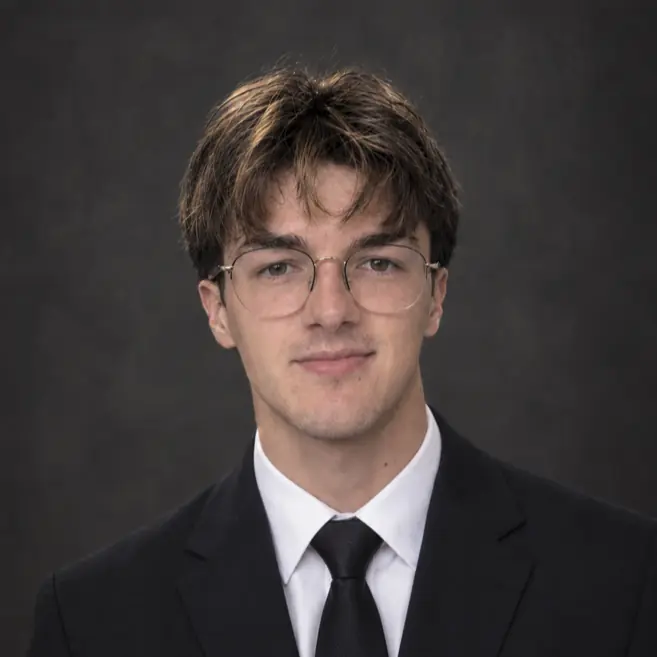
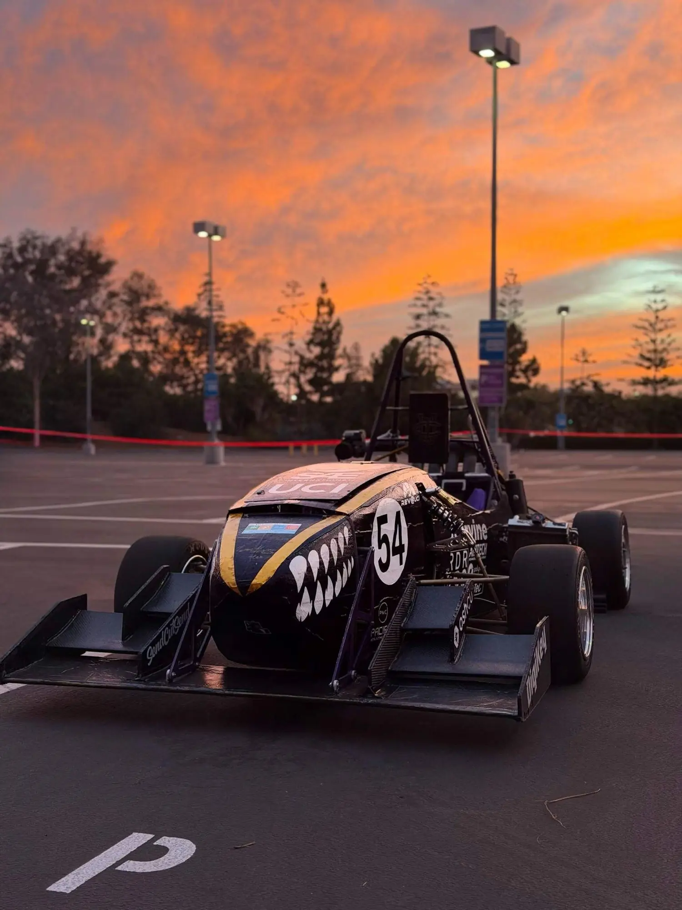
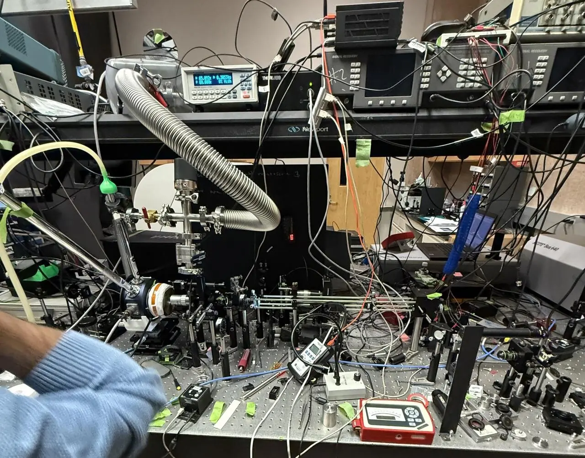

Engineering Portfolio: Daniel Nelson
I design mechanical systems, model the physics behind them, and machine the parts myself. As a chemical engineering student at UC Irvine, my work so far includes a valvetrain redesign for a Formula SAE engine breathing through a 20 mm restrictor, a two-axis motion platform with CNC-machined ball joints, and phase-matching models for nonlinear optics. Three years in a machine shop underpin all of it.

- Engineer
- Daniel Nelson
- Program
- B.S. Chemical Engineering, Energy & Sustainability · Minor, Materials Science
- Teams
- Anteater Formula Racing · ChemE Car · UCI Materials Research Institute
- Practice
- Powertrain · Manufacturing · Materials & optics · Energy · Computation
Machining & fabrication: CNC mill and lathe, manual machining, MIG welding, waterjet, laser and plasma cutting.
CAD & design: SolidWorks, Fusion 360, GD&T drawings, CAD/CAM toolpaths.
Chemical instrumentation & analysis: UV/VIS, FTIR, ICP-MS, SEM, optical measurement, electrochemical cells.
Projects documented here, from powertrain and machining to materials research and combustion chemistry.
Top three projects
Three projects, in depth
The work I’d most like you to see first. Each one opens into a full write-up with the analysis, figures and hardware behind it.

01 / 03 · Powertrain · 2026 · Anteater Formula Racing
Valvetrain redesign for a restricted Yamaha R6
Formula SAE forces all intake air through a single 20 mm restrictor. Over ten weeks I measured the stock engine and modeled its valvetrain in MATLAB. Then I redesigned the cam and valve seat around that limit and checked the design with CFD and FEA before any metal was cut.
Combustion-chamber model error vs. OEM geometry
ModeledFEA safety factor, redesigned 6.5 mm lobe (stock 1.29)
Modeled · FEA


02 / 03 · Systems · 2024 · Team of two
Two-axis hydraulic flight simulator
Two of us built a motion platform from scratch, from equations to a working prototype. The prototype demonstrated the concept to a laboratory director to secure funding for the hydraulic version.
- Flight simulatorX-Plane
- UDP packetsPython
- Inverse kinematicsderived by hand
- Driver circuitcustom PCB
- Solenoid valvesactuators
- Platformpitch + roll
03 / 03 · Research · 2025 · UCI Materials Research Institute
Nonlinear optics in lithium niobate and 2D materials
Entangled photon pairs only appear when pump, signal and idler satisfy a narrow phase-matching condition. I built Python models that find those conditions in LiNbO3, including an interactive map that locks any one wavelength and solves for the rest. I also helped with measurements in the lab.
- Research papers reviewed~75
- Processes studiedSPDC · SHG · SFWM
- SimulationPython · Lumerical · Mechanical

All projects
Grouped by discipline, newest first
Most of this work crosses disciplines. Physical design sits on one side and chemistry and energy on the other. Materials science is where they meet.
Group A
Physical design & systems
Mechanical design · manufacturing · powertrain · controls
- 2026GameSense impact-sensing cleatSensor grid mapped onto a cleat, an ESP32 prototype and a scoring app.VTHacks 14 award
- 2026Valvetrain redesign, Yamaha R6Measured baseline, MATLAB model, CFD and FEA for a 20 mm-restricted engine.Top 3
- 2025Fourier / Laplace visualizerA web app that builds signals from Fourier series and epicycles.Laplace in dev.
- 2024Two-axis hydraulic flight simulatorHand-derived kinematics, UDP control and CNC ball joints at ¼ scale.Top 3
- 2023Gas go-kartClub president; fuel system, clutch, chain tensioning and welding.Built
- 2022Manufacturing & fabricationMachinist program: CNC, CAM, welding, laser cutting; guitar and gearbox car.Built
The connection
Materials science
Structure, properties and how materials respond to light, pressure and chemistry
Group B
Chemistry & energy
Electrochemistry · kinetics · thermodynamics · energy systems
- 2026Electrolysis dry cellA miniature dry cell to supply oxyhydrogen to a small engine.In development
- 2026Supercritical Energy LLCEnergy systems internship: thermodynamic and heat-flow simulation, CFD.Industry · NDA
- 2025Hydrogen–oxygen ignition modelConstant-volume kinetics on a 19-step mechanism; 3D flammability maps.Modeled
- 2025ChemE Car lead-acid batteryA 12 V battery from raw materials; 6th of 20+ at Western Regionals.Result
Where the threads meet
None of these began as hydrogen projects. Several of them point there anyway.
The same questions keep coming up across the work: how valve timing and port flow shape what a chamber can burn, how electrochemistry stores and releases energy, how to model a system honestly in code. My hydrogen–oxygen ignition model sits where those overlap. It is a constant-volume kinetics simulator built on a 19-step elementary mechanism, and more than 64,000 differential-equation evaluations map how ignition delay responds to spark temperature, pressure and mixture.
A miniature dry-cell electrolyzer for oxyhydrogen
The cell is designed to supply oxyhydrogen to a small motorcycle engine. Initial CAD and component selection are done and several parts are purchased; system integration is being worked out. Once it runs, the ignition model gives me a way to choose operating conditions and valve timing deliberately rather than by trial.